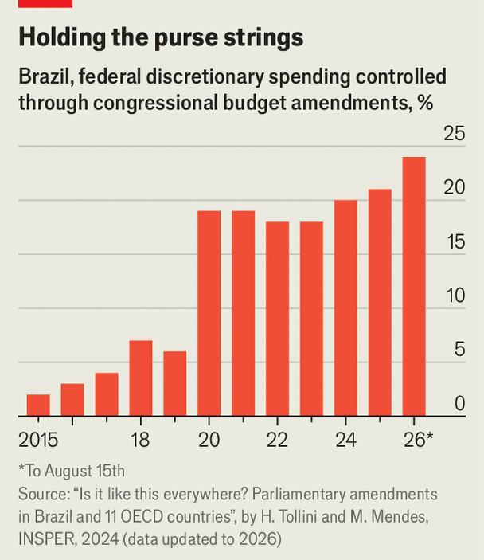

The big democracy where lawmakers are mightier than the executive
A too-weak president can be a threat to democracy, too
Aug 20th 2026
In the past decade, democracies around the world have been bent to the will of would-be autocrats. From the United States to Turkey and India, strongmen have accumulated power in the executive branch of government, and weakened the institutions that could check them, legislatures in particular.
Frustrated lawmakers elsewhere, therefore, might envy their peers in Brazil, where this trend is running in reverse: in the past decade Brazil’s executive branch has lost clout to the courts, and especially to Congress. The balance of power has become so distorted that Brazilian lawmakers no longer seem to care who is elected president in the general election in October. Some reckon that whoever wins may be forced to capitulate to their demands. Brazilians may be in the process of discovering that, just as an excess of executive power is a challenge to democracy, so an overmighty Congress can be, too.
The contest on October 4th will pit two radically different presidential candidates against each other: the incumbent, Luiz Inácio Lula da Silva, known as Lula, is an 80-year-old left-winger. His rival, Flávio Bolsonaro, is the 44-year-old son of a populist former president, Jair Bolsonaro, who is serving a 27-year sentence for plotting a coup after losing an election in 2022. All 513 seats in the lower house will also be renewed, as well as two-thirds of the Senate. Yet despite the polarised race, Brazil’s largest bloc, the Centrão (big centre), which accounts for 46% of seats in the outgoing Congress, has declared its neutrality. Party bigwigs will allow local politicians to support whichever candidate they choose.
In the past decade, as a succession of weak presidents ruled Brazil, Congress hijacked power from the executive. In 2016, amid a gigantic corruption probe which ensnared dozens of legislators, lawmakers impeached Dilma Rousseff, the left-wing president at the time, in part because they felt she was not doing enough to protect them from investigators. Ms Rousseff’s successor, Michel Temer, governed with little public support. Mr Bolsonaro, who ruled between 2019 and 2022, gave lawmakers ever-greater control of the federal budget in order to shield himself from impeachment attempts after his disastrous handling of the covid-19 pandemic. Today, Brazilian legislators control 25% of discretionary spending in the federal budget, up from 2% in 2015 (see chart).
Such power over the budget is highly unusual. Marcos Mendes of Insper, a university in São Paulo, and Hélio Tollini, a budget adviser to the lower house, have compared congressional amendments in 11 countries of the OECD, a club of mostly rich countries. In some, such as Canada and Australia, lawmakers have no right to amend the budget or apportion funds for themselves. In others, such as the United States, France, Italy and Spain, only around 1% of discretionary spending in the budget is allocated to congressional amendments. In most of these states, lawmakers propose amendments to the budget, which are not always accepted.

Not so in Brazil. There the budget must now always include a sum for congressional amendments. Congressmen often do not stipulate what they will use the money for. They have indexed the amount that the government must allocate to amendments to revenue growth, so that their grants inexorably grow. And they have all but scrapped rules around transparency and traceability in the use of funds.
The proportion of money that Congress controls is not huge. Over 90% of Brazil’s budget of 6.5trn reais ($1.2trn) is spent on mandatory expenses, such as public salaries, pensions and financing the debt. Even as congressional control over the discretionary slice expands, the share of the budget that goes to mandatory spending is growing rapidly. In 2026 only 3.7% of the budget, or $46bn, was available. Of this, Congress controls $12bn.
Easy access to money has boosted incumbents’ chances of re-election, as it allows lawmakers to fund glitzy projects that their constituents like. Their political allies in local government benefit, too. In 2024, when Brazilians elected over 5,500 mayors and tens of thousands of city councillors, a record 81% of incumbents who chose to run again held onto their jobs. In the upcoming general election, 87% of lower house members are standing for re-election, the highest share in Brazilian history.
In Brazil’s fragmented party system, where presidents rarely command a congressional majority, control of the budget had long been a powerful bargaining chip for the executive. Presidents could shore up support in Congress by threatening to withhold funds for lawmakers’ projects. Now that leverage is much weaker. In April the Senate rejected Lula’s nominee to the Supreme Court, Jorge Messias. He was the first such presidential nominee to be turned down in more than a century. Senators wanted the seat to be filled by someone from within their own ranks.
Congress is using its new powers to write more laws. Between 1988 and 2004, more than 80% of new laws in Brazil originated in the executive. By 2025 the share was 19%, while Congress accounted for 75%. This is not in itself bad, but Beatriz Rey of the University of Lisbon notes that Congress has become more susceptible to lobbies. Last year it rushed through a bill that hollowed out environmental licensing, under pressure from agribusiness groups. When Lula vetoed large parts of the bill, Congress overturned most of his vetoes.
Outright corruption is perhaps the biggest risk. In July the Federal Accounts Court released a sample of 100 so-called “Pix amendments”, where relatively small amounts of money are sent directly by a legislator to his local municipality. The grants in the sample totalled around $40m and had been sent to 75 recipients between 2020 and 2024. Irregularities were found in 82% of transfers, including money that moved through bank accounts that had nothing to do with the stipulated project for the grant, contracts with wildly inflated budgets, or funds destined for projects that were never completed. The accounts court estimated the loss to the public purse at $10m. The sample was small, but if it is representative, the losses are huge. Congress has approved 7bn reais of Pix amendments in the current budget, meaning some $340m may have been lost.
In 2024 the Supreme Court forced legislators to identify the bank account that would receive federal funds, and to provide details on the projects the grants would be destined for. Yet legislators appear ready to put up a fight. Lawmakers have filed eight impeachment motions against Flávio Dino, the justice in charge of investigating legislators who make suspicious budgetary grants. (In Brazil the Supreme Court is in charge of criminal investigations into sitting politicians.)
Indeed, lawmakers are gleefully throwing their weight around. Since 2021, senators have filed 105 impeachment petitions against Supreme Court judges (who have themselves become overmighty in recent years). The number of petitions may rise as new corruption investigations continue to ensnare legislators, including probes into fraud at the public-pension fund and the fallout from the biggest bank fraud in Brazil’s history. Brazil’s next president faces not only sluggish economic growth, high interest rates and a polarised electorate, but an overmighty Congress that will try to keep him weak and compliant. ■